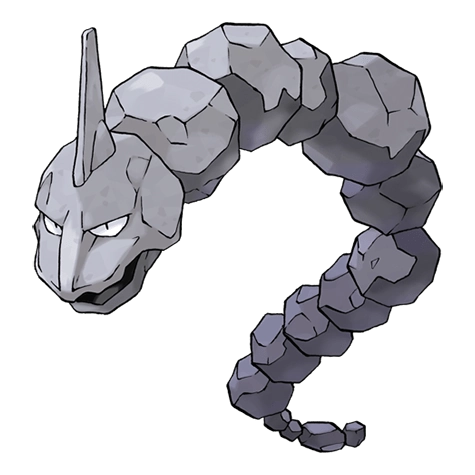

Оникс

Оникс — Покемон первого поколения под номером 95 в Покедекс. Обитает он в регионе Канто и относится к Каменному и Земляному типу. В голове у Оникса есть магнит. Он заменяет компас и позволяет не потеряться во время выкапывания глубоких тоннелей. По мере взросления Оникс стачивает себя о скалы, и его тело выглядит более округлым и гладким.
Тип:
Земляной
Каменный
Эволюция
# 095 Оникс